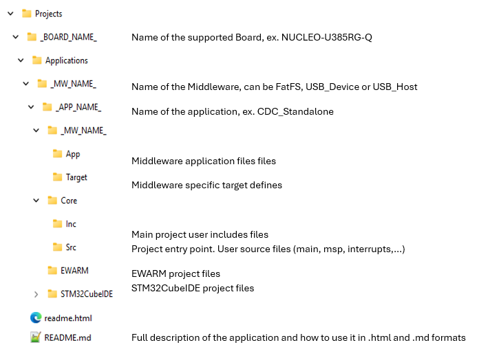

Release Notes for STM32U3 Classic Core Middleware package
Copyright © 2025 STMicroelectronics
Purpose
With Classic Core Middleware complementing the extensive STM32Cube ecosystem providing free development tools, software bricks, and software expansion packages, STM32 users can also leverage the rich services of Classic Core Middleware, which meet the needs of tiny, smart, connected devices.
stm32u3-classic-coremw-apps (Classic Core Middleware Software Expansion for STM32Cube) provides an integration of Classic Core Middleware in the STM32Cube environment for the STM32U3 series of microcontrollers. Ready-to-run applicative examples are also provided for the NUCLEO-U385RG-Q boards, thus reducing the learning curve and ensuring a smooth application development experience with Classic Core Middleware and STM32U3 MCUs.
The scope of this package covers the following Middlewares: USB Device and Host, File System(FatFS).
This package covers the following middlewares:
- USB Device/Host: Classic USB stacks.
- FatFS: File System for external memory file management.
Repository structure
The STMicroelectronics Classic Core Middleware STM32U3 repository consists of the following repositories:
- Drivers: contains STM32U3 CMSIS, HAL and BSP drivers
- Middlewares: FatFS, USB Device/Host
- Projects: Application examples for supported boards. Projects are structured as follows:

Documentation
More comprehensive documentation is available on STM32 MCU Wiki.
Update history
Main changes
- Maintenance release of STM32U3 Classic Core Middleware package.
- Add STM32CubeIDE projects for all applications
Contents
Applications
| Application | Readme |
|---|---|
| FatFs_RAMDISK_Standalone | readme |
| HID_Standalone | readme |
| CDC_Standalone | readme |
| HID_Standalone | readme |
| CDC_Standalone | readme |
Middlewares
| Name | Version | License | Readme |
|---|---|---|---|
| FatFS | R0.15 | BSD-3-Clause | release notes ST modified 20241220 release notes |
| STM32 USB Device Library | 2.11.5 | SLA0044 | release notes |
| STM32 USB Host Library | 3.5.4 | SLA0044 | release notes |
Known limitations
None
Development toolchains and compilers
- IAR Embedded Workbench for ARM (EWARM) 9.20.1 + ST-LINKV3.
- STM32CubeIDE 2.1.0 + ST-LINKV3.
- Keil MDK-ARM 5.39 + ST-LINKV3.
Supported devices and boards
Dependencies
None
Main changes
- First official release of the Classic Core Middleware package for STM32U3.
- Application examples for NUCLEO-U385RG-Q.
Contents
Applications
| Application | Readme |
|---|---|
| FatFs_RAMDISK_Standalone | readme |
| HID_Standalone | readme |
| CDC_Standalone | readme |
| HID_Standalone | readme |
| CDC_Standalone | readme |
Middlewares
| Name | Version | License | Readme |
|---|---|---|---|
| FatFS | R0.15 | BSD-3-Clause | release notes ST modified 20241220 release notes |
| STM32 USB Device Library | 2.11.3 | SLA0044 | release notes |
| STM32 USB Host Library | 3.5.3 | SLA0044 | release notes |
Known limitations
None
Development toolchains and compilers
- IAR Embedded Workbench for ARM (EWARM) 9.20.1 + ST-LINKV3.
- STM32CubeIDE 1.18.0 + ST-LINKV3.
- Keil MDK-ARM 5.39 + ST-LINKV3.
Supported devices and boards
Dependencies
None